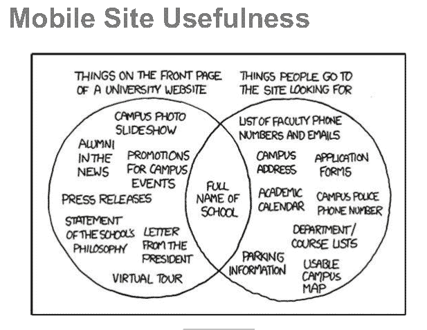
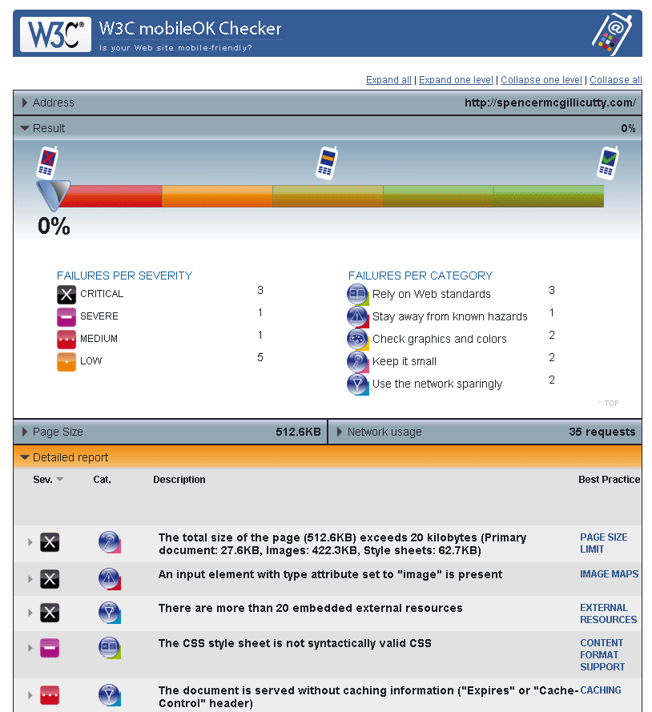
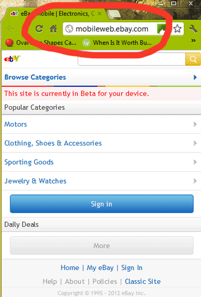

Brittany's Guide to Mobile Web Design
What is Mobile Web Design?
It's web design that is made to cater to the very different needs of mobile users.
The first thing to understand about Mobile Web Design is that mobile devices do not just provide a different form factor for web usage. They also represent an entirely different "usage scenario," and thus demand an entirely different browsing experience! Mobile web users will access your site in unpredictable lighting, distracting environments, and often want different information than when browsing on a desktop.
Your user interface needs to be designed with both of these major differences in mind.
Physical Usage Differences
Mobile browsing happens on devices of totally different shapes, sizes, and input methods. Cell phones, PDAs, and tablets range from a viewport width of 170 pixels (an old Nokia N70) to 946 pixels (an iPad viewed in the landscape orientation). Mobile users do not have your standard full-size keyboard/mouse combo. Their input methods are generally less accurate and slower stylus, mini keyboard, T9, arrowpad, touchscreen, and multi-touchscreen. Joe Marini, from Lynda.com recommends that you "Design for the Finger." Fingertips vary from 40pixels wide to 80pixels wide, and have no mouseover ability. Inputting information can be a frustrating experience for the mobile user, who often has only one hand free.
Situational Usage Differences
Desktop users generally have a reliable internet connection with few limits on the amount of data they can download per month. Mobile users have to watch their Megabytes closely or face overage charges. Desktop users usually sit at a desk with a chair and good lighting. Mobile users do not have this reliable environment on their side, so we as designers don't either. Mobile users are out and about, maybe squinting to read their screen under the July sun, or looking up imdb.com facts in a dark movie theater. They may be trying to be discreet so as not to appear rude, or they might even be riding a bike while browsing! A mobile user often wants a quick answer to a question, instead of reading pages and pages of content. What movie do I recognize that actor from? What's the phone number for that bookstore? Where's the nearest Thai place? 
Why Is It Cool?
Borrowed from webdesignshock.com
Mobile browsing is expected to overtake desktop browsing by 2014 (according to multiple sources). Mobile devices have access to some sweet information that desktop computers can't provide!
Here are some examples of features you can access from a mobile device (using script), now or in the near future:
- Clock
- Ambient light
- Compass
- Camera
- Thermometer
- Geolocation
- Accelerometer
- Microphone
- Messaging
- Calendar
However, with all this info available, mobile users expect that a webpage is going to know something about them -- like where they are, and what time it is, or even what the weather's like!
Example Script for Detecting a User's Location (from Lynda.com)
if (Modernizr.geolocation) {
navigator.geolocation.getCurrentPosition(geoSuccess, geoError);
}
function geoSuccess(positionInfo) {
document.getElementById("longitude").innerHTML = positionInfo.coords.longitude;
document.getElementById("latitude").innerHTML = positionInfo.coords.latitude;
document.getElementById("accuracy").innerHTML = positionInfo.coords.accuracy;
document.getElementById("altitude").innerHTML = positionInfo.coords.altitude;
document.getElementById("altitudeAccuracy").innerHTML = positionInfo.coords.altitudeAccuracy;
document.getElementById("heading").innerHTML = positionInfo.coords.heading;
document.getElementById("speed").innerHTML = positionInfo.coords.speed;
}
function geoError(positionError) {
if (errorInfo.code == 1)
alert("The user denied permission access");
else if (errorInfo.code == 2)
alert("Unable to locate you!");
else if (errorInfo.code == 3)
alert("Timed out getting location");
}
Okay, How Do I Do This?
You have three main options.
Option #1. Do Nothing. Hope it works okay for mobile.
This is actually a valid option for some sites. You can run your website through the W3C's "Mobile Friendly" validator here and see how close your site is to working as-is:
You'll receive a percentile score of how mobile-friendly your website is, and give you notes on how to fix it up. Below is a picture of a total failure (a Wordpress site designed with no thought given to mobile devices).
The "Do Nothing" option could be good for lightweight (small file-size) pages, with flexible, flowing content and traditional vertical columns. It's not a good idea for sites with complex layouts, or sites that rely on large graphic elements, framesets, or plug-ins like Flash (Lynda.com).
Option #2 - Multi-serve. Separate styling and scripting for each form.
This is the approach I took in my demo. Link your HTML file to several different sets of CSS rules, dependent on viewport width or device type. One disadvantage is that it can be difficult to make one HTML file successfully serve two to three vastly different styles. And, if you use too many varying CSS rules, you risk bloating the filesize to the point of being not worth the trouble - the mobile device will still be burdened wtih all the info of the desktop version. See below, the phone and tablet versions of my demo site - made from mutiple CSS media queries.
The "Multi-serve" option is good for pages that have mostly semantic HMTL. It's not good for complex pages with embedded images or video, or sites that should have vast differences between their mobile and desktop versions. (Lynda.com)
Option #3 - Mobile-specific. Totally split the content into two separate websites.
 You would set up a subdomain, like mobile.mywebsite.com and write in some server-side detection. When the server sees the main webpage (mywebsite.com) is being accessed by a mobile device, it redirects it to the subdomain. This server-side detection can be unreliable, which is a downside to this approach. And you have to maintain two separate batches of content. But, your users get perfectly optimized content no matter how they access your site -- and that can be worth a lot. According to AppSumo.com, 40% of web users report that they've sought out a competitor after a frustrating experience with their first-choice's website. SO, having an optimized web experience is not a bad idea at all. A word of caution: If your site automatically detects whether a visitor is coming from a mobile browser, make sure it's set up to send that visitor to the link they were trying to visit, otherwise they're likely to leave and never come back. See the screenshot for ebay's mobile web version.
Option #3.5 - Build an App.
If none of the above will provide the functionality your mobile users will need, you'll need to build an app. An app (application) is a program that a user downloads and installs onto their mobile device, rather than views inside a browser. It may pull content or data from the Internet or store it locally on the device. It rarely makes sense to build an app without already having a mobile website in place. Then use an app to add functionality -- like complex calculations or reporting, offline access/performance, interactive games, or regular usage of a personalized account -- like Facebook (webdesignshock.com).